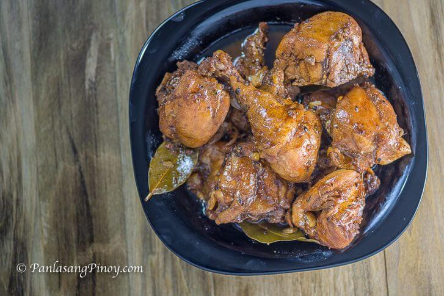

Chicken Adobo is a type of Filipino chicken stew. Chicken pieces are marinated in soy sauce and spices, pan-fried,
and stewed until tender. The dish gained popularity because of its delicious taste and ease in preparation.
It tastes just right and the cooking time is around 30 minutes. The best way to eat chicken adobo is to have it with
warm white rice. The combo is simply known as Chicken Adobo and Rice. Pouring some of the adobo sauce over rice before
eating is a good idea because it makes it more flavorful.
Ingredients
- 2 lbs chicken cut into serving pieces
- 3 pieces dried bay leaves
- 8 tablespoons soy sauce
- 4 tablespoons white vinegar
- 5 cloves garlic crushed
- 1 1/2 cups water
- 3 tablespoons cooking oil
- 1 teaspoon sugar
- 1/4 teaspoon salt optional
- 1 teaspoon whole peppercorn
How to Cook Chicken Adobo
- Start by marinating the chicken in soy sauce and garlic. The garlic needs to be crushed for best results. This process
takes 1 hour to 12 hours depending on how flavorful you want the dish to be. Sometimes marinating for an hour is not enough.
I think that 3 hours is optimal. The chicken absorbs most of the flavors from the soy sauce and garlic during this step. It is
noticeable when you taste the dish after cooking. Note that it is also possible to include the vinegar in this step.
- The next step is to separate the chicken from the marinade. Make sure to set the marinade aside because it will be used later
on. Pan-fry the chicken pieces for 1 to 1 ½ minutes per side. This will partially cook the outer part. It also makes the skin
tough enough to withstand stewing later. This means that it will remain intact, which is nice for presentation.
- Pour marinade into the pot and add water. Let boil. The bay leaves and whole peppercorn can now be added. The process takes 20
to 25 minutes depending on the quality of the chicken. However, feel free to cook longer in low heat for a super tender chicken adobo.
-
Add the vinegar. This can also be added as a part of the marinade. Let it cook for 10 minutes and then add sugar and salt. I only
add salt if needed. It is important to taste your dish before adding seasonings.
-
Filipino chicken adobo can be served with or without sauce. If you like it very tasty then continue to cook on an uncovered cooking
pot until the liquid completely evaporates.
Instructions
- Combine chicken, soy sauce, and garlic in a large bowl. Mix well. Marinate the chicken for at least 1 hour. Note: the longer the time,
the better
-
Heat a cooking pot. Pour cooking oil.
-
When the oil is hot enough, pan-fry the marinated chicken for 2 minutes per side.
-
Pour-in the remaining marinade, including garlic. Add water. Bring to a boil
-
Add dried bay leaves and whole peppercorn. Simmer for 30 minutes or until the chicken gets tender
-
Add vinegar. Stir and cook for 10 minutes.
-
Put-in the sugar, and salt. Stir and turn the heat off.Serve hot. Share and Enjoy!